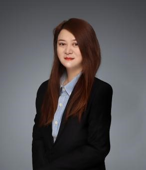

教师介绍 | ||
 | 教师姓名 | 王馨 |
职务职称 | 副教授 | |
研究方向 | 摩擦学、焊接、先进材料表层改性及疲劳断裂研究等 | |
联系电话 | ||
wangx@sspu.edu.cn | ||
通讯地址 | 上海浦东金海路2360号29楼1008室 | |
个人简介 | ||
2010年9月-2013年7月 上海大学 材料学 博士 2013年7月-2018年7月 上海电机学院 材料学院 副教授 2018年7月-2020年4月 上海交通大学 材料加工工程 博士后 2020年5月-至今 上海第二工业大学 智能制造与控制工程学院 副教授 | ||
主要论文、专利及著作情况 | ||
l论文： [1]Wang X, Wang Q , Tang B Z , et al. Compositional Dependence of Curie Temperature and Magnetic Entropy Change in the Amorphous Tb–Co Ribbons[J].Materials, 2021, 3(23):2988. [2]Wang X, Wang Q, Tang B Z, et al. Large magnetic entropy change and adiabatic temperature rise of a ternary Gd34Ni33Al33 metallic glass[J].Journal of Rare Earths, 2020. [3]Wang X, Wang Q, Tang B Z , et al. Magnetic and Magneto-Caloric Properties of the Amorphous Fe92xZr8Bx Ribbons[J].Materials, 2020, 13(23):5334. [4]Wang X, Tang B Z , Wang Q , et al. Co50Gd48-xFe2Nix amorphous alloys with high adiabatic temperature rise near the hot end of a domestic magnetic refrigerator[J].Journal of Non-Crystalline Solids, 2020, 544:120-146. [5]Xin Wang, Dandan Mao, Xicheng Wei*, Wurong Wang, Cr atom diffusion in tribolayer T10 steel induced by dry sliding against 20CrMnTi steel,Applied Surface Science, 2013, 270: 145–149. [6]Xin WANG, Xiaolu HONG, Jiaoyuan YANG, Wurong WANG, Xicheng WEI*, Formation of sliding friction-induced deformation layer with nanocrystalline structure in T10 steel against 20CrMnTi steel[J].Applied Surface Science, 2013, 280:381-387. [7]XinWANG, Dandan MAO, Xicheng WEI*, Jian LI, HUA Meng, Wurong WANG, Sliding Friction Induced Atom diffusion in the deformation layer of 0.45% C steel rubbed against Tin alloy[J].Tribology International, 2013, 64: 128-134. [8] Xin WANG, Xuerui YANG, Zhengbang CHENG, Wurong WANG, Xicheng WEI*, Atomic diffusion of gradient ultrafine structured surface layer produced by T10 steel rubbing against 20CrMnTi steel[J].Wear, 2013, 304:118-125. [9]XinWANG, XichengWei, Jing Zhang, RongbinLi*, Meng Hua, WurongWang, Formation of Nanocrystallized Structure in Worn Surface Layer of T10 Steel against 20CrMnTi Steel during Dry Rubbing[J].Journal of Nanomaterials, 2016, 2016:1-6. [10]Xin WANG, Rulin ZHANG, Tao Zhou, Xicheng WEI, Peter LIAW, Rui FENG, Wurong WANG, Rongbin LI*, Microstructural evolution in chroming coatings friction pairs under dry sliding test conditions[J].Advances in Tribology, 2018, 2018:1-8. [11] Dandan Mao,XinWANG,Wurong Wang, Xicheng Wei*, Effect of boronizing on the dry sliding wear behavior of DC53/0.45 mass% C steel pairs[J].Surface & Coatings Technology,2012, 207:190-195. | ||
主要科研项目 | ||
1.上海科技英才扬帆计划项目，15YF1404400，高强钢薄板成形中的摩擦行为及表面损伤机理研究，2015/01-2017/12，10万元，结题，主持 2.上海市教委创新计划项目，15ZZ104，离子注入与沉积复合强化技术在铝锂合金表面的应用及耐磨机理研究，2015/01-2017/12，8万元，结题，主持 3.上海市优秀青年教师专项基金项目，ZZSDJ14007，干滑动摩擦诱发T10钢变形层的组织结构演化研究，2014/01-2016/12，4万元，结题，主持 4.上海市教育科学研究项目，C2021062，产教融合背景下职业教育多元协同治理研究，2021/01-2023/12，5万元，在研，主持 5.《ZJ17花胶辊新型对位装置的研究》（C80GX210015）（主持）（苏州沪琨智能科技有限公司）横向，70万，结题，主持 6.《EDM自动化开发设计》（C80GX200044）（主持）（昆山市研通模具有限公司）横向，60万，结题，主持 | ||
荣誉及获奖 | ||
1.上海市科技进步奖《清洁能源高端装备用大型铸锻件关键部件材料研究与工程应用》二等奖2016年排名第五 | ||